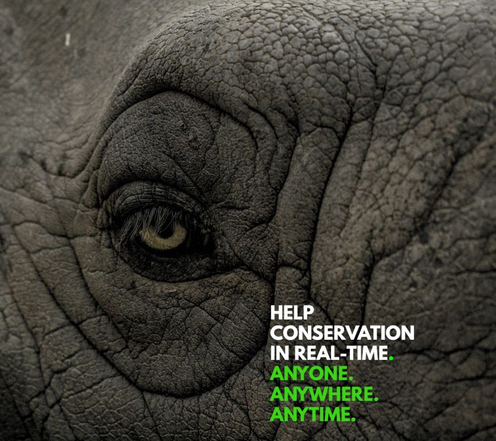
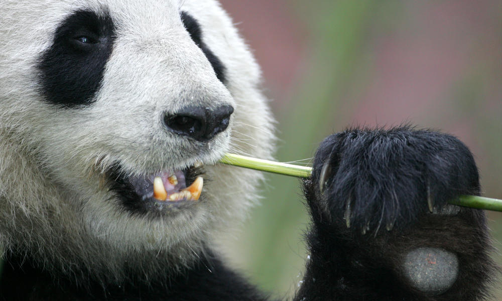
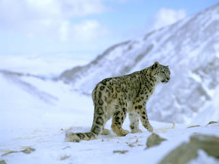
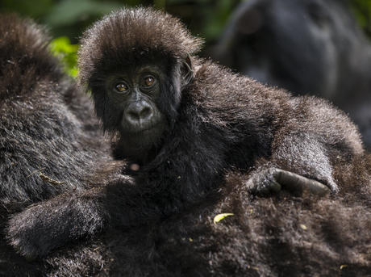

Key Conservation is helping conservationists gain critical funding and global support through a mobile app (in development) that provides real-time updates on day-to-day campaigns.
Conservation organizations all over the world are working tirelessly to stop extinction but they need our help.
We are wildlife biologists who saw a massive disconnect in the way we could reach out for real-time global support for critical needs outside our project's budget. We also didn't know where to turn to get help from skilled professionals and needed a better way to connect with our communities about real-time volunteer opportunities and events. Additionally, supporters of conservation shared that they wanted new ways to get involved, like sharing their skills, more transparency as to exactly where their money is going, better ways to stay connected with what is happening in the field and feedback on how their individual support made a difference. We knew conservation organizations all over the world needed more support so we decided to do something about it by creating the Key Conservation app.



The Skilled Impact feature enables supporters to give their professional skills to help conservation organizations. For example, a graphic designer could help design an outreach campaign, a mechanic could help fix a patrol vehicle or a drone operator could assist with collecting data on a remote study area. Tapping into these skills empowers supporters to share their expertise and experience with conservationists that need them to take their mission to the next level. Our hope is that sharing skills will help create a community around the work being done as well as a lifelong connection between an individual and a conservation organization.
The In-Person feature allows supporters to be alerted to real-time volunteer opportunities in their area through geo-based push notifications. This feature updates automatically as supporters travel around the world, alerting them to opportunities within a customized range. For example, if a conservation organization needs help pushing their patrol vehicle out of the mud or they want to alert locals of a sea turtle hatchling release they can send out a push notification to supporters within a set radius. Here supporters can also see on a map what conservation organizations are around them, search a different city to see what organizations and events are going on there, learn about events coming up in their area and local groups they can join to help make a difference in their own community.
The Funding feature allows supporters to see exactly what conservation organizations need for issues happening in real-time. Each post will have itemized requests from the field and supporters can choose what they would like to give funds to. Supporters also have the option to give unrestricted funding so the organization can use it to pay for critical needs like salaries, travel, longterm goals and more. With each contribution supporters to send messages of encouragement to conservationists in the field!